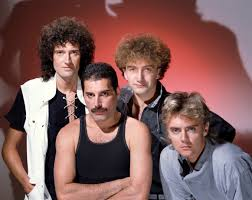
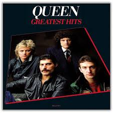

Queen
Jofre Noguera Rojas
Pagina Oficial Queen
Canço mes popular: Bohemian Rhapsody
Aquesta cançó té, en aquest moment, 1.886.000.000 visualitzacions, definitvament la seva canço més popular.
Imatges del Grup

Imatge del grup en Wikipedia |

Imatge similar pero amb color |

Imatge del grup en "Greatest Hits"
Components del grup & Instruments
- Freddie Mercury: Veu & Piano
- Brian May: Veu & Guitarra
- Roger Taylor: Veu & Bateria
- John Deacon: Bass
Taula d'albums
| Any | Album | Num Cançons |
|---|---|---|
| A Night in the Opera | 1975 | 12 |
| Innuendo | 1991 | 12 |
| A kind of Magic | 1986 | 9 |
| Queen Rock Montreal | 2007 | 28 |